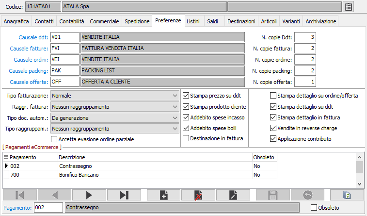

Preferenze
La linguetta contiene informazioni attinenti alle tipologie di documenti abitualmente utilizzate dal cliente, che vengono proposte automaticamente al momento dell’emissione dei documenti stessi, e ad alcuni parametri di compilazione dei documenti stessi. La compilazione della sezione può pertanto essere omessa dagli utenti che non utilizzano le relative procedure.
La sezione relativa ai 'Pagamenti eCommerce' è presente solo se è installato e configurato il modulo eCommerce ed in questo caso stabilisce quali sono le modalità di pagamento consentite per il cliente attivo; da questa sezione è possibile inserire o cancellare i pagamenti attivi per il cliente.

CAUSALE DDT: inserire il codice della causale Ddt abituale del cliente. Viene proposta in fase di emissione documenti. Su questo campo è attiva la ricerca (F9) sulla tabella causali Ddt.
NUMERO COPIE DDT: inserire il numero di copie di DDT che si devono stampare per il cliente.
CAUSALE FATTURE: inserire il codice della causale fattura preferenziale del cliente. Viene proposta in fase di emissione fatture. Su questo campo è attiva la ricerca (F9) sulla causali fatture.
NUMERO COPIE FATTURA: inserire il numero di copie di fatture che si devono stampare per il cliente.
CAUSALE ORDINE: inserire il codice della causale ordini preferenziale del cliente. Viene proposta in fase di emissione ordini. Su questo campo è attiva la ricerca (F9) sulla tabella causali ordini.
NUMERO COPIE ORDINE: inserire il numero di copie di ordini che si devono stampare per il cliente.
CAUSALE PACKING: inserire il codice della causale packing list preferenziale del cliente. Viene proposta in fase di emissione documenti. Su questo campo è attiva la ricerca (F9) sulla tabella causali packing list.
NUMERO COPIE PACKING: inserire il numero di copie di packing list che si devono stampare per il cliente.
CAUSALE OFFERTE: inserire il codice della causale offerta del cliente. Viene proposta in fase di emissione documenti. Su questo campo è attiva la ricerca (F9) sulla tabella causali offerte.
NUMERO COPIE OFFERTE: inserire il numero di copie di offerta che si devono stampare per il cliente.
TIPO FATTURAZIONE: definisce la periodicità di fatturazione del cliente: normale, quindicinale, mensile.
RAGGRUPPAMENTO FATTURA: combo box per definire le eventuali modalità di raggruppamento DDT in fattura, nel caso in cui esistano più DDT dello stesso cliente al momento della generazione delle fatture. Valori ammessi:
Nessun raggruppamento = una fattura per ciascun DDT.
Per cliente = tutti i DDT generano una sola fattura.
Per cliente/Riferimento Ddt = genera la fattura raggruppando i Ddt (e non gli articoli in esso contenuti); in pratica per ogni Ddt viene generata una riga con il totale merce per tipo rigo/codice Iva (presente se non sono gestiti i progetti di rigo).
Per cliente / destinazione = viene generata una fattura per tutti i DDT relativi ad una specifica destinazione diversa.
Per cliente/destinazione/Riferimento Ddt = genera la fattura raggruppando i Ddt (e non gli articoli in esso contenuti); in pratica per ogni Ddt viene generata una riga con il totale merce per tipo rigo/codice Iva (presente se non sono gestiti i progetti di rigo).
Per cliente / prodotto = tutti i DDT generano una sola fattura e gli stessi articoli presenti in più DDT vengono fatturati con un solo rigo di fattura per il totale delle quantità.
Per cliente / destinazione / prodotto = viene generata una fattura per tutti i DDT relativi ad una specifica destinazione diversa e gli stessi articoli presenti in più DDT vengono fatturati con un solo rigo di fattura per il totale delle quantità.
Per cliente / destinazione amministrativa = viene generata una fattura per tutti i DDT relativi ad una specifica destinazione amministrativa.
Per cliente/destinazione amministrativa/Riferimento Ddt = genera la fattura raggruppando i Ddt (e non gli articoli in esso contenuti); in pratica per ogni Ddt viene generata una riga con il totale merce per tipo rigo/codice Iva (presente se non sono gestiti i progetti di rigo).
Per cliente / destinazione amministrativa / destinazione = viene generata una fattura per tutti i DDT relativi ad una specifica destinazione amministrativa e specifica destinazione diversa.
Per cliente / destinazione amministrativa / prodotto = viene generata una fattura per tutti i DDT relativi ad una specifica destinazione amministrativa e gli stessi articoli presenti in più DDT vengono fatturati con un solo rigo di fattura per il totale delle quantità.
Per cliente / destinazione amministrativa / destinazione / prodotto = viene generata una fattura per tutti i DDT relativi ad una specifica destinazione amministrativa e specifica destinazione diversa e gli stessi articoli presenti in più DDT vengono fatturati con un solo rigo di fattura per il totale delle quantità.
Per cliente/destinazione amministrativa/destinazione/Riferimento Ddt = genera la fattura raggruppando i Ddt (e non gli articoli in esso contenuti); in pratica per ogni Ddt viene generata una riga con il totale merce per tipo rigo/codice Iva (presente se non sono gestiti i progetti di rigo).
TIPO DOCUMENTO AUTOMATICO: indica il tipo di documento da generare dalla procedura di generazione documenti spedizione: DDT, fattura o quanto espressamente richiesto durante la procedura.
TIPO RAGGRUPPAMENTO: definisce il criterio di raggruppamento in fase di generazione documenti spedizione: nessun raggruppamento, in base agli ordini (documenti generati per ordine), in base agli ordini con selezione di eventuali condizioni di fatturazione diverse.
ACCETTA EVASIONE ORDINE PARZIALE: definisce se, in fase di generazione documenti spedizione, è possibile evadere gli ordini anche parzialmente (casella con segno di spunta) o solo per il totale (casella vuota).
STAMPA PREZZO SU DDT: se presente la spunta, il flag abilita la stampa dei prezzi unitari di vendita sui DDT indirizzati al cliente attivo.
STAMPA PRODOTTO CLIENTE: se presente la spunta e se presenti le descrizioni speciali degli articoli, il flag determina la stampa, sui documenti emessi al cliente attivo, di codice articolo e descrizione prodotto del cliente anzichè dei normali codice articolo e descrizione prodotto.
ADDEBITO SPESE INCASSO: se presente la spunta, il flag determina l’addebito delle spese di incasso su effetti al cliente attivo.
ADDEBITO SPESE BOLLI: se presente la spunta, il flag determina l’addebito delle spese di bollo su tratte autorizzate al cliente attivo.
DESTINAZIONE IN FATTURA: nel caso in cui si utilizzi la fatturazione raggruppata per cliente, consente di ordinare i Ddt all’interno della fattura per codice destinazione riportando per ogni destinatario i relativi dati (casella con segno di spunta).
STAMPA DETTAGLIO SU ORDINE/OFFERTA: se presente la spunta, il flag indica se sulla stampa degli ordini clienti e/o delle offerte clienti si desidera la stampa del dettaglio delle quantità.
STAMPA DETTAGLIO SU DDT: se presente la spunta, il flag indica se sulla stampa dei Ddt clienti si desidera la stampa del dettaglio delle quantità.
STAMPA DETTAGLIO IN FATTURE: se presente la spunta, il flag indica se sulla stampa delle fatture di vendita si desidera la stampa del dettaglio delle quantità.
VENDITE IN REVERSE CHARGE: se la casella è spuntata viene proposto, nei documenti del ciclo attivo (Offerte, Ordini, Ddt, Fatture, Vendita al dettaglio), il codice Iva inserito nel campo "Codice Iva reverse charge VEN" presente sugli articoli, se presente, altrimenti viene proposto il codice Iva inserito nel campo ”Codice Iva”.
APPLICAZIONE CONTRIBUTO: se la casella è spuntata, in fase di gestione fattura e generazione fatture sarà effettuato il calcolo degli eventuali contributi collegati ai prodotti presenti nel documento.